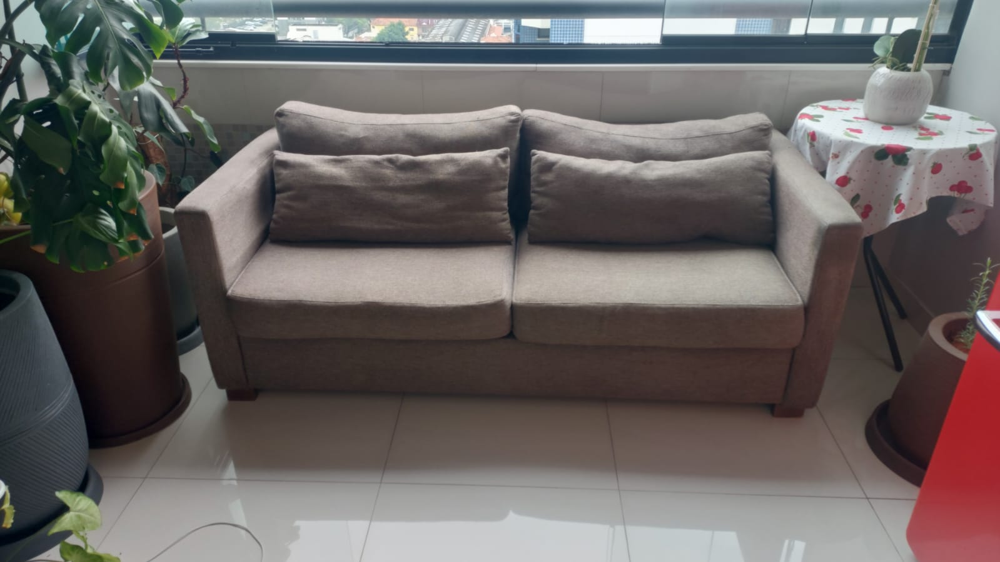
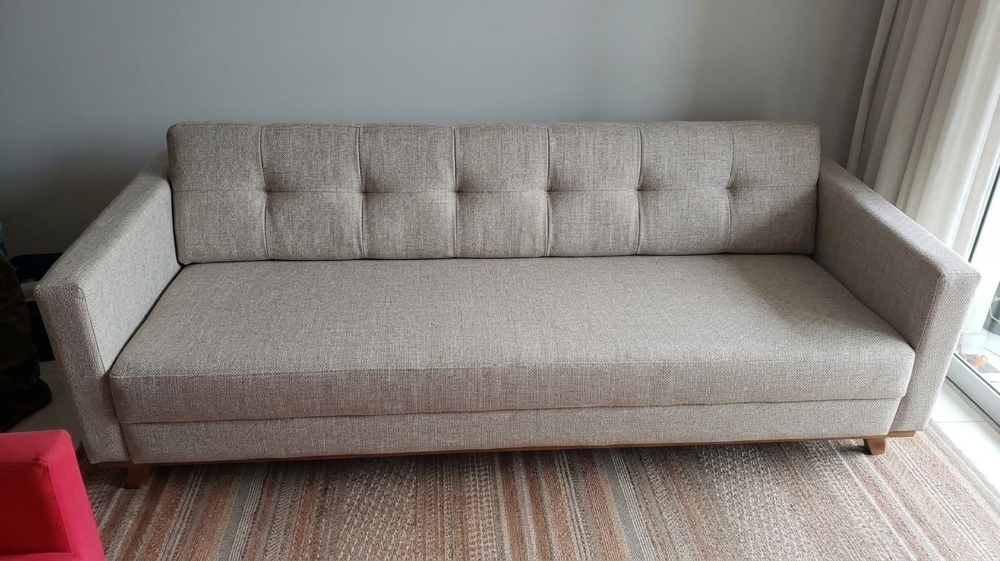
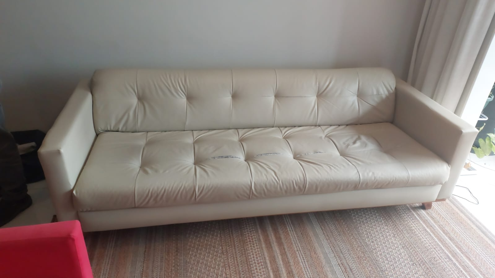
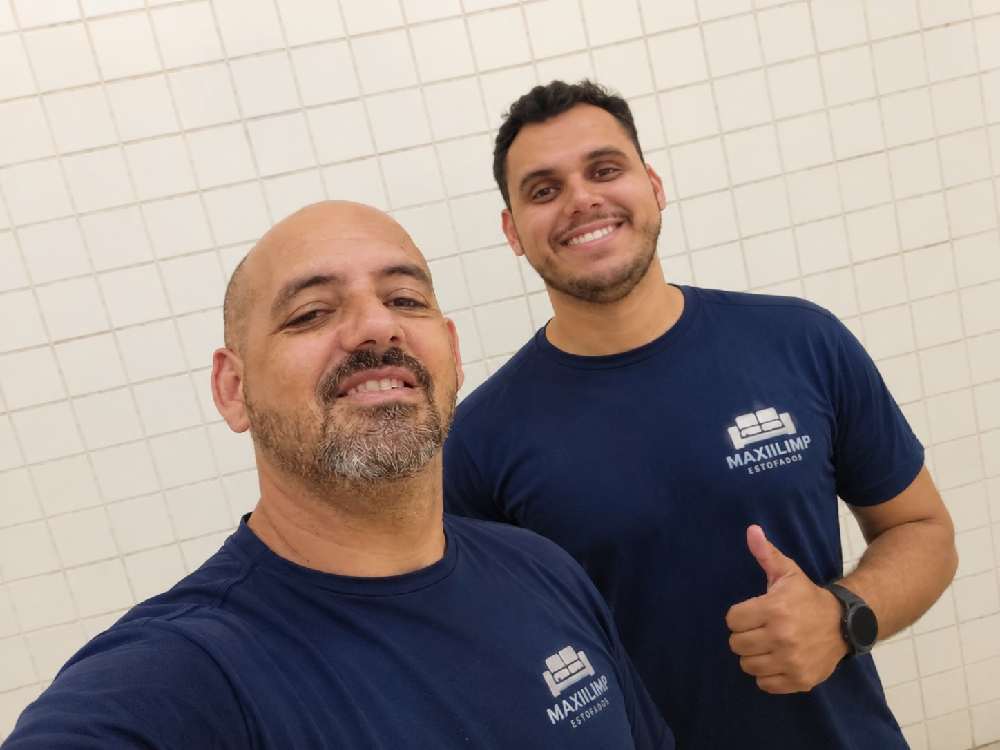
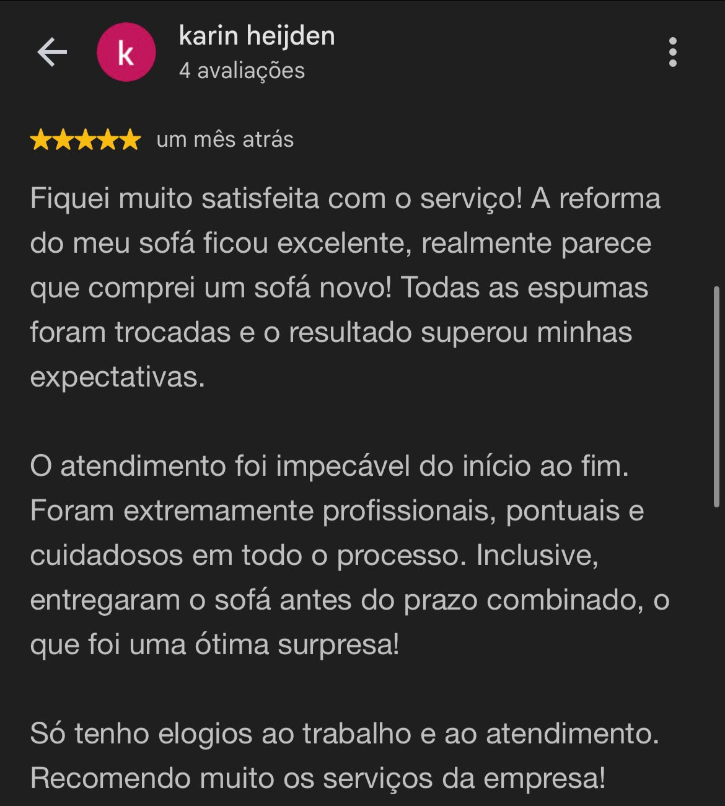
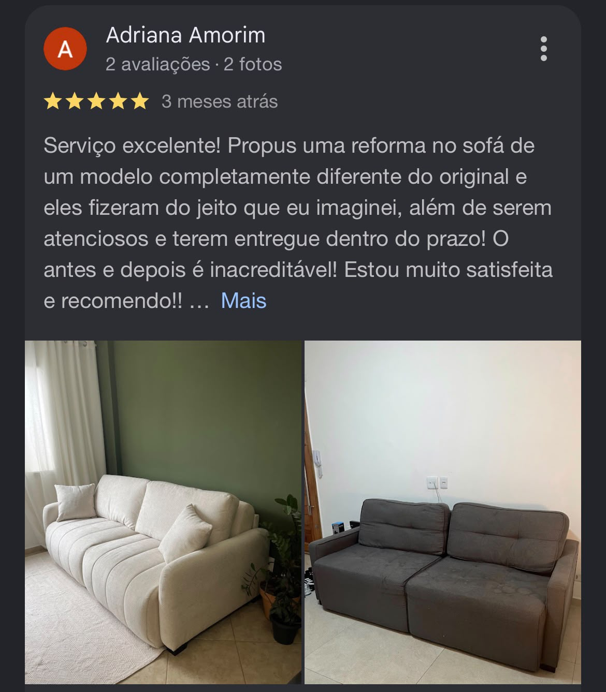

Seu estofado
de cara nova.
Seu espaço também.
Reformamos, lavamos e protegemos sofás e outros estofados para você continuar usando o que gosta, com conforto de novo.
- Equipe experiente
- Orçamento no WhatsApp
- Cuidado em cada etapa

muda o dia a dia.
O QUE FAZEMOS
Cada peça pede
um cuidado diferente.
Você conta o que aconteceu. A gente avalia o tecido, o uso e o tipo de serviço que faz sentido.
Cheiro, manchas ou desgaste?
Explique pra gente pelo WhatsApp.
ANTES E DEPOIS
Veja a diferença
no mesmo estofado.
Arraste o controle para comparar as fotos. Envie suas imagens de antes e depois para substituir os espaços.

ANTES
DEPOISSofá reformado pela equipe Maxilimp
- 01
Orçamento
Mande fotos, conte o que precisa e informe as medidas, se tiver. A avaliação é [PRESENCIAL/PELAS FOTOS].
- 02
Retirada
Combinamos endereço, data e valor da retirada: [DETALHES DA RETIRADA].
- 03
Serviço
Fazemos o trabalho aprovado e avisamos se houver alguma mudança no prazo combinado: [PRAZO].
- 04
Entrega
Devolvemos a peça em [PRAZO DE ENTREGA]. Garantia do serviço: [GARANTIA].

SOBRE A MAXILIMP
Experiência de oficina.
Conversa sem enrolação.
A Maxilimp é uma tapeçaria de [CIDADE]. Nossos profissionais experientes cuidam de reforma, conserto e limpeza de estofados com atenção ao tecido, ao acabamento e ao uso de cada peça.
Antes de começar, explicamos o serviço, o prazo e a garantia. Assim você sabe o que será feito e pode decidir com tranquilidade.
Atendemos [BAIRROS E REGIÃO] · Desde [ANO DE INÍCIO]
Fale com a MaxilimpQUEM JÁ FEZ COM A GENTE
Palavra de cliente.
Avaliações de quem confiou à Maxilimp a reforma do sofá.


A lavagem tira manchas e cheiro? +
O resultado depende do tecido, do tipo de mancha e de há quanto tempo ela está na peça. Para avaliarmos, envie fotos e conte sobre o cheiro ou a mancha. [INFORME LIMITES E PRODUTOS UTILIZADOS]
Quanto tempo demora o serviço? +
O prazo depende do serviço e da agenda. Para este tipo de peça, a previsão é [PRAZO].
Vocês retiram e entregam o estofado? +
Atendemos [REGIÃO DE RETIRADA E ENTREGA]. O custo é [VALOR OU REGRA DE COBRANÇA].
Qual é a garantia do serviço? +
A garantia é de [PRAZO E CONDIÇÕES DA GARANTIA]. Explicamos o que ela cobre antes de aprovar o serviço.
Como peço um orçamento? +
Chame no WhatsApp com fotos da peça, seu bairro e o serviço que procura. A equipe retorna em [PRAZO DE RESPOSTA].
FALE COM A MAXILIMP
Conte o que aconteceu
com a sua peça.
Se tem mancha, cheiro, tecido gasto ou uma ideia para reformar, mande uma mensagem. A gente orienta você.
Chamar no WhatsAppTelefone
(11) 93090-1826
Horário
[HORÁRIO DE ATENDIMENTO]
Atendimento
[ENDEREÇO OU REGIÃO]